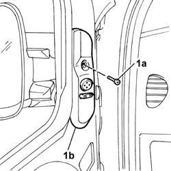
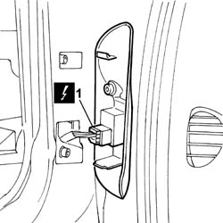
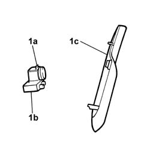
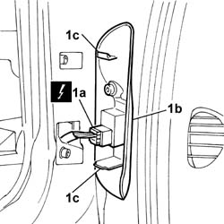

7005R40 rear view mirror-s and door mirror-s positioning switch unit - r r
- Path
- Procedures > 70 FITTINGS > 7005 PASSENGER COMPARTMENT FRONT SIDE DOORS > 7005R front door mirrors > 7005R40 rear view mirror-s and door mirror-s positioning switch unit - r r
- Kind
- repair procedure (removal / refitting; the operation number is the code)
- Applies to
- all engines; all production periods
- Interactive page
- https://sloeber94.github.io/elrnDB-fDbl/en/#/2585027
Applies to: all engines; all production periods
 Removing
Removing
 Refitting
RefittingDisconnect the battery negative terminal.
1. Undo the fixing bolt (1a) and remove the embellishment (1b) from its seating complete with switch unit.

Applies to: all engines; all production periods
1. Disconnect the electrical connector.
 | Name | Connector |
|---|---|---|
1 | Adjustable mirror control |

Applies to: all engines; all production periods
1. Release the retaining lug (1a) and remove the switch unit (1b) from the embellishment (1c).

Applies to: all engines; all production periods
Refitting
RemovingFit the switch unit in its seating on the embellishment.
1. Connect the electrical connector (1a) and fit the embellishment (1b), fitting the retaining lugs (1c) in their seats until they click into place.
| Name | Connector |
|---|---|---|
1a | Adjustable mirror control |

Applies to: all engines; all production periods
Tighten the bolt securing the embellishment.
Connect the battery negative terminal.